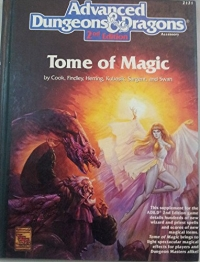

“Tome of Magic” on the
Shelf of Many Books

Tome of Magic
D&D 3.5
(3e)
Year
: 1991
Tome of Magic
on Amazon
Tome of Magic
on Amazon
Tome of Magic
on TSR Info
Known monsters from the book:
Dark Creature
Deadly Dancer
Deathshead
Elder Shadow Elemental
Ephemeral Hangman
Garbler
Greater Shadow Elemental
Horned Beast
Huge Shadow Elemental
Karsite
Khayal
Large Shadow Elemental
Logokron
Loquasphinx
Medium Shadow Elemental
Murder of Crows Swarm
Painspeaker
Roving Mauler
Small Shadow Elemental
Tooth Beast
Word Archon